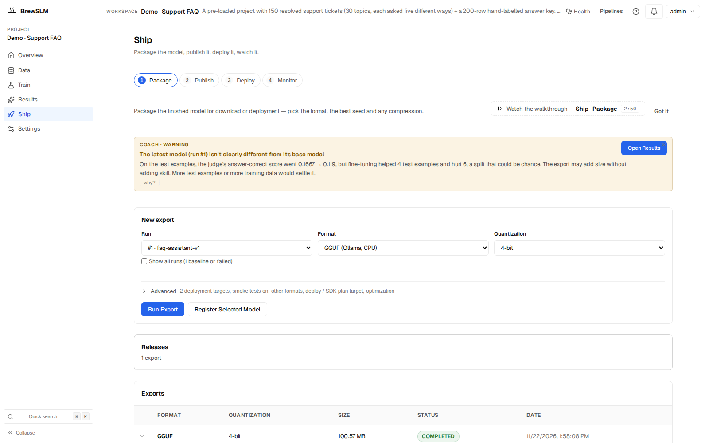

Export formats and what each one needs
GGUF for Ollama and CPUs, Hugging Face for Transformers and the Hub, ONNX, TensorRT and Docker for the rest. What lands in the package, which tools have to be on the machine, and what stops an export.
An export takes one finished run and turns it into something you can serve without BrewSLM. There are five formats in the code (backend/app/models/export.py:15-20): gguf, huggingface, onnx, tensorrt and docker. The Ship page shows the first two in its Format picker, labelled GGUF (Ollama, CPU) and HuggingFace; the other three are under Advanced → Other formats. We put it that way because those two cover almost every real use we have had.
Where it happens
Ship → Package → New export. Pick the Run (finished runs only; baselines and failed runs appear after Show all runs), the Format and the Quantization (None, 4-bit or 8-bit; 4-bit is the default, and choosing HuggingFace switches it to None until you touch it). Then Run Export. The same thing from a terminal is brewslm export --project-id 7 --experiment-id 12 --format gguf --quantization 4-bit; see the CLI reference.

What every package contains
Each export writes a run folder (run-<UTC timestamp>/) with model/, a Dockerfile, a serve.py, RELEASE_NOTES.md and manifest.json, plus eval_report.json when the run has one and a Modelfile for GGUF (backend/app/services/export_service.py). serve.py is a small FastAPI app with /generate and /health, reading the model from MODEL_PATH (default ./model).
The manifest records the run id, format, quantization, the base model, final train and eval loss, whether the weights were merged from an adapter, the decoding settings and per-source data licences with train / validation / test counts. Paths in it are relative to the run folder and your home directory becomes ~, so a package can move between machines without leaking your username. A source with an unknown or non-commercial licence warns; it never blocks.
Format by format
| Format | What you get | What the machine needs |
|---|---|---|
| GGUF | One quantized .gguf file, a Modelfile for Ollama, a llama-cpp-python serve.py | llama.cpp: convert_hf_to_gguf.py (LLAMA_CPP_DIR or LLAMA_CPP_CONVERT_SCRIPT) and a llama-quantize binary (LLAMA_CPP_QUANTIZE_BIN) |
| Hugging Face | Merged safetensors weights, tokenizer and config, ready for Transformers or the Hub | Nothing beyond the training stack |
| ONNX | An int8 dynamically quantized ONNX model | optimum, onnx and onnxruntime (or optimum-cli) |
| TensorRT | Packages an existing .engine or .plan | An engine you built yourself; there is no inline converter |
| Docker | The weights with a Dockerfile that installs from requirements.txt | Docker, at deploy time |
GGUF bit widths map to fixed llama.cpp types (backend/app/services/compression_service.py:280): 4-bit is Q4_K_M, 8-bit is Q8_0, None is F16, and the API also knows 2, 3, 5 and 6 bits (Q2_K, Q3_K_M, Q5_K_M, Q6_K). Ask for a label it doesn't support, such as Q4_0, and the export fails with the list of supported ones. We chose an error over quietly converting to the nearest type, because a file named 4-bit that is really something else is worse than no file.
GGUF, ONNX and TensorRT are packaged only from a converted file, never from raw weights with a new name. If the run has no converted file yet, the export converts it first (through backend/scripts/quantize.py), so there is no separate compression step to remember. TensorRT is the exception: it stops and tells you to build the engine first.
LoRA adapters are merged first
A LoRA run saves an adapter, not a model. For Hugging Face and Docker exports the adapter is merged into its base in fp32 and saved in the base checkpoint's own dtype as safetensors (backend/app/services/adapter_merge_service.py). For GGUF and ONNX, the conversion script detects an adapter-only folder and merges before converting. If the merge fails, the error names the run and the base model. You never have to ship an adapter plus instructions.
The Modelfile keeps the evaluated decoding
This part exists because of a bug we shipped and then found. Our evaluations used to inherit the base model's generation_config.json, including a repetition penalty of 1.1 on one popular instruct family. On the NTSB extractor that penalty turned 232 of 468 stated aircraft models into nulls on validation; at 1.0 it was 16. So BrewSLM now scores with explicit, neutral decoding and records it on every result, and the export carries the same settings forward.
The GGUF Modelfile starts with a comment naming its source (# Generated by BrewSLM: decodes the way the model was evaluated (eval #N)), then FROM the GGUF file and one PARAMETER line each for temperature, repeat_penalty, top_k, top_p and min_p, taken from the run's newest built-in eval. Greedy evals become temperature 0. max_new_tokens becomes num_predict, and num_ctx is set from the run's max sequence length plus that, rounded up to 256 and at least 2,048. With no recorded eval, the defaults are temperature 0, repeat_penalty 1.0, top_k 0, top_p 1.0, min_p 0. A chat TEMPLATE is written only when the run trained with the tokenizer's chat template and the template is one BrewSLM can render-check (ChatML, Llama 3 or Gemma); otherwise the file says why it left it out.
Hugging Face and Docker exports get the same idea differently: their generation_config.json is rewritten to neutral decoding (no sampling, one beam, repetition penalty 1.0), and the release notes carry a Decoding: line. ONNX and TensorRT files are not rewritten.
What stops an export
- No weights. A run that never trained real weights (a simulated run, for example) fails with "No model artifacts found for run #N".
- Your project's deployment gates. If
gate_policynames must-pass rules that the run fails, the export stops with "Export blocked by deployment gates". - Validation. After building, the deployment suite looks for a deployable artifact for the chosen format and fails the export if there isn't one.
A weak result does not block an export. The Coach warns, as in the screenshot above, and the decision stays yours.
Publishing to the Hub
Ship → Publish lists completed Hugging Face exports only. Give a repo id (owner/model-name), tick private if you want, and press Publish to Hugging Face. The token comes from the request, then HF_TOKEN, then your huggingface-cli login cache, and it is never stored. The export's model/ folder becomes the repo root; the manifest and release notes go under brewslm/ with paths scrubbed. A model card is generated for span taggers and passage readers only. For anything else the Hub page starts blank and the UI says so, so write the card yourself, with your own limits up front.
Try it on a demo
- Projects → Open demo on "Demo · Support FAQ", then Train → Train → Launch (real training needs a GPU and a worker).
- Ship → Package → Format GGUF (Ollama, CPU), Quantization 4-bit → Run Export.
- In the package folder, open the
Modelfileand check the first comment names an eval, then runollama create faq -f Modelfileandollama run faq.